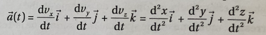

La cinématique est la partie de la physique qui étudie les mouvement des systèmes indépendamment des causes qui les produisent.
A. Mouvement et référentiel
Le mouvement d'un point est toujours étudié par rapport à un référentiel. Un référentiel est un observateur lié à un système
d'axes de coordonnées et muni d"un dispositif pour mesurer le temps
La trajetoire est le chemin suivi par le point dans l'espace.
pour repérer le point, on définit un repère d'espace attaché
au référentiel.
La position d'un point M au cours du temps est repéré par
le vecteur position OM→.
les coordonnée de ce vecteur dans le repère sont égales
à celles du point M :
OM→(t) = x(t)
i→ + y(t)
y→ + z(t)
k→
La vitesse v d'un point au cours du temps est repéré par
le vecteur vitesse v→.
le vecteur vitesse de point M est égal à la dérivée par
rapport au temps du vecteur position de M :
v→(t) = d
OM→/dt
Ses coordonnées sont égales aux dérivées par rapport au
temps des coordonnées du vecteur position :
L'accélération a d'un point, au cours du temps est repéré
par le vecteur accélération a→.
Le vecteur accélération
du point M est égal à la dérivée par rapport au temps
du vecteur vitesse, ou à la dérivée seconde par rapport au temps du vecteur
position :
Ses coordonnées sont égales aux dérivées par rapport au temps des coordonnées du vecteur
vitesse, ou des dérivées secondes des coordonnées du vecteur position :

C. Différents types de mouvements
On identifie le mouvement d'un point matériel à partir de son type de trajectoire et de
l'évolution dans le temps de sa vitesse. Il existe plusieurs types de mouvement:
Mouvement rectiligne et uniforme: à condition où
v→ = constante
et a→ =
0→
Mouvement rectiligne et uniformément varié: à condition où
a→ = constante
Mouvement circulaire et uniforme: à condition où
v→ = constante
Mouvement circulaire et non uniforme: à condition où
v→
varie au cours du temps.
2) La dynamique de Newton
La dynamique permet de prévoir le mouvement d'un point matériel à partir de ses causes.
A. Bilan des forces
Une force appliquée à un système mécanique indéformable a pour conséquence:
- de le mettre en mouvement;
- de modifier son mouvement (vitesse, trajectoire).
On associe à une force une intensité exprimée en
newtons(N). On la représente par un vecteur force
F→
caractérisé par :
- son point d'application ;
- son sens ;
- sa longueur.
B. Référentiels galiléens
Un référentiel est dit galiléen si le mouvement d'un point matériel
isolé est rectiligne et uniforme dans ce référentiel.
Le référentiel de Copernic, dont l'origine est le centre des masses du
Système solaire et dont les trois axes pointent vers trois étoiles fixes est galiléen. Tout référentiel en mouvement rectiligne et uniforme par rapport au référentiel
de Copernic est galiléen.
C. Les lois de Newton
Les lois de Newton sont uniquement valables dans des référentiels galiléens.
Pour appliquer ces lois, il faut au préalable réaliser un bilan des forces
appliquées au système.
Première loi de Newton
Dans un référentiel galiléen, si la somme vectorielle des forces extérieures est nulle,
alors le mouvement du centre d'inertie est rectiligne et uniforme : son vecteur
vitesse est constant au cours du temps.
La réciproque est vraie : si le centre d'inertie est animé d'un mouvement rectiligne
et uniforme alors la somme vectorielle des forces extérieures est égale au vecteur nul.
∑ F→ext =
0→ ⇔
v→ ne varie
pas au cours du temps.
On définit une grandeur attachée au point matériel qui est la quantité
de mouvement p. Le vecteur quantité de mouvement
p→ est égal au
produit de la masse m du point matériel par le vecteur vitesse
v→ :
p→ = m ×
v→
Deuxième loi de Newton
Dans un référentiel galiléen, la somme vectorielle des forces extérieures qui
s'exercent sur un système de masse m est égal à la dérivée par rapport au temps
du vecteur quantité de mouvement
p→
du centre d'inertie du système.
Troisième loi de Newton
Considérons un système A exerçant une force
F→
A/B
sur un système B. Alors, le système B exerce une force
F→
B/A
sur le système A qui le même droite d'action, la même norme et un
sens opposé à la force
F→
A/B
.
Maintenant que vous avez fini la lecon sur ce chapitre,
on vous a proposé une Quiz pour tester vous connaissance sur cette leçon.
Allez! C'est parti! Balançez-vous! Cliquer sur le smiley!